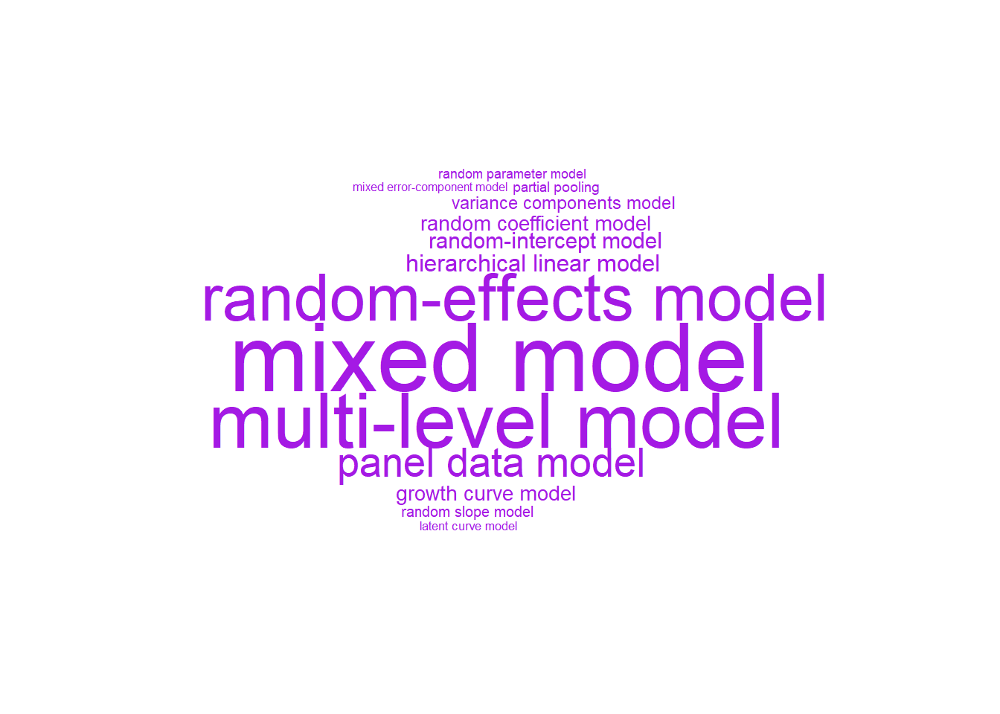
2. Linear Mixed Models/Multi-level Models
This reading:
- Introducing the multilevel model (MLM)
- How the MLM achieves partial pooling
- Fitting multilevel models in R
- Model estimation and convergence
different names for the same thing
The methods we’re going to start to look at are known by lots of different names (see Figure 1). The core idea is that model parameters vary at more than one level..
Fixed effects
In the simple linear regression model was written as \(\color{red}{y} = \color{blue}{b_0 + b_1x_1 \ + \ ... \ + \ b_px_p} \color{black}{\ + \ \varepsilon}\), the estimated coefficients \(\color{blue}{b_0}\), \(\color{blue}{b_1}\) etc., are estimated as fixed values - i.e. we estimate just one number for \(b_0\), and one number for \(b_1\), for \(b_2\) and so on, and that’s it.
In the example where we model school children’s grades as a function of their motivation score, when we fit a simple regression model of lm(grade ~ motiv), the estimated parameters are two values that define a line - an intercept and a slope (as in Figure 2).
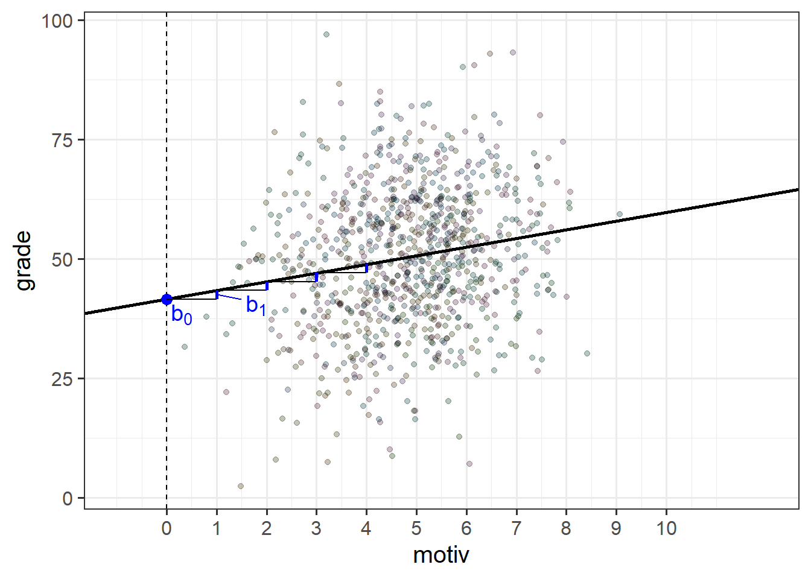
The intercept and slope here are ‘fixed’ in the sense that it does not matter what school a child is from, if they score 0 on the motivation scale, then our model predicts that they will get a grade of 41.6 (the intercept).
schoolmot <- read_csv("https://uoepsy.github.io/data/schoolmot.csv")
srmod <- lm(grade ~ motiv, data = schoolmot)...
Coefficients:
Estimate Std. Error t value Pr(>|t|)
(Intercept) 41.606 1.725 24.121 < 2e-16 ***
motiv 1.815 0.344 5.275 1.66e-07 ***
---To make this point really clear, we can write our model equation with the addition of a suffix \(i\) to indicate that the equation for the \(i^{th}\) child is:
\[ \begin{align} &\text{For child }i \\ &\text{grade}_i = b_0 + b_1 \cdot \text{motiv}_i + \epsilon_i \end{align} \] i.e. For any child \(i\) that we choose, that child’s grade (\(\text{grade}_i\)) is some fixed number (\(b_0\)) plus some fixed amount (\(b_1\)) times that child’s motivation (\(\text{motiv}_i\)).
The issue, as we saw in 1A #clustered-data, is that the children in our study are actually related to one another in that they can be grouped into the schools that we sampled them from. It’s entirely possible (and likely) that there are school-level differences might actually account for quite a lot of the variation in grades. In the previous reading we actually estimated this to account for approximately 22% grade variation (1A #ICC).
One option we have hinted at is that we could consider adding in the schoolid as a predictor to our linear model to estimate all these school-level differences (lm(grade ~ schoolid + motiv)). This is a good start, and may oftentimes be perfectly acceptable if our clustering is simply a nuisance thing that we want to account for - adding in the clustering as another predictor will completely account for all cluster-level variability in our outcome variable.
However, more frequently these clusters are themselves additional units of observation that have features of interest to us. For instance, we may be interested in how the funding that a school receives moderates the association between childrens motivation and grades - i.e. we’re interested in things that happen both at the child-level (motivation, grades), and at the school-level (funding). For these scenarios, we really need a multilevel model.
clusters as fixed effects
We have already seen that we can include fixed effects for cluster differences (we referred to this as “no pooling”).
e.g. to fit school-level differences in grades, we could use:
femod <- lm(grade ~ motiv + schoolid, data = schoolmot)The model equation for this would look something like: \[ \begin{align} \text{For child }i& \\ \text{grade}_i =\, &b_0 + b_1 \cdot \text{motiv}_i + b_2 \cdot \text{isSchool2}_i + b_3 \cdot \text{isSchool3}_i\,\, + \,\, ... \,\, + \\ & ... + \,\, ... \,\, + \,\, ... \,\, + \\ & b_p \cdot \text{isSchoolP}_i\,\, + \epsilon_i \end{align} \]
The school coefficients are a series of dummy variables that essentially toggle on or off depending on which school child \(i\) is from.
Because these set of coefficients account for all of the school-level differences in grades, it means we are then unable to consider other school-level variables like funding (how much govt funding the school receives). If we try, we can see that a coefficient for funding is not able to be estimated because schoolid is explaining everything school-related:
femod2 <- lm(grade ~ motiv + schoolid + funding, data = schoolmot)
summary(femod2)Coefficients: (1 not defined because of singularities)
Estimate Std. Error t value Pr(>|t|)
(Intercept) 33.1420 2.8257 11.729 < 2e-16 ***
motiv 4.8107 0.4145 11.606 < 2e-16 ***
schoolidArdnamurchan High School -9.6072 3.1035 -3.096 0.00203 **
schoolidBalwearie High School -16.6493 3.0922 -5.384 9.36e-08 ***
... ... ... ... ...
... ... ... ... ...
funding NA NA NA NA Introducing the Multilevel Model
The multi-level model is an alternative model structure that accounts for cluster-level differences in a more flexible and parsimonious way. It achieves this by taking some of the estimated coefficients (the \(b_?\)’s) in our linear regression model and modelling these as randomly varying by clusters (i.e. clusters differ in their value for \(b_?\)).
Let’s see how this works by starting with the intercept, \(b_0\).
random intercepts
To extend the single-level regression model to the multi-level regression model, we add in an extra suffix to our equation to indicate which cluster an observation belongs to.1 Then, we can take a coefficient \(b_?\) and allow it to be different for each cluster \(i\) by adding the suffix \(b_{?i}\). Below, we have done this for our intercept \(b_0\), which has become \(b_{0i}\).
However, we also need to define these differences in some way, and the multilevel model does this by expressing each cluster’s intercept as a deviation (\(\zeta_{0i}\) for cluster \(i\), below) from a fixed number (\(\gamma_{00}\), below). Because these differences are to do with the clusters (and not the individual observations within them), we often write these as a “level 2 equation”:
\[ \begin{align} \text{For observation }j&\text{ in cluster }i \\ \text{Level 1:}& \\ \color{red}y_{ij} &\color{black}= \color{green}b_{0i} \color{blue} + b_1 \cdot x_{ij} \color{black}+ \epsilon_{ij} \\ \text{Level 2:}& \\ \color{green}b_{0i} &\color{black}= \color{blue}\gamma_{00} \color{black}+ \color{orange}\zeta_{0i} \\ \end{align} \]
mixed-effects notation
Instead of writing several equations at multiple levels, we substitute the Level 2 terms into the Level 1 equation to get something that is longer, but all in one:
\[ \color{red}y_{ij} \color{black}= \underbrace{(\color{blue}\gamma_{00} \color{black}+ \color{orange}\zeta_{0i}\color{black})}_{\color{green}b_{0i}} \cdot 1 + \color{blue}b_{1} \cdot x_{ij} \color{black}+ \varepsilon_{ij} \]
This notation typically corresponds with the “mixed effects” terminology because parameters can now be a combination of both a fixed number and a random deviation, as in the intercept below:
\[ y_{ij} = \underbrace{(\underbrace{\gamma_{00}}_{\textrm{fixed}} + \underbrace{\zeta_{0i}}_{\textrm{random}})}_{\text{intercept, }b_{0i}} \cdot 1 + \underbrace{b_1}_{\textrm{fixed}} \cdot x_{ij} + \varepsilon_{ij} \]
Returning to our school children’s grade example, we can fit a model with “random intercepts for schools”, which would account for some schools having higher grades, some having lower grades, etc.
\[ \begin{align} \text{For Child }j\text{ in School }i& \\ \text{Level 1 (child):}& \\ \text{grade}_{ij} &= b_{0i} + b_1 \cdot \text{motiv}_{ij} + \epsilon_{ij} \\ \text{Level 2 (school):}& \\ b_{0i} &= \gamma_{00} + \zeta_{0i} \\ \end{align} \] If we consider one of our schools (e.g. “Beeslack Community High School”) we can see that our model predicts that this school has higher grades than most other schools (Figure 3). We can see how this is modelled as a deviation \(\zeta_{0\text{B}}\) (B for Beeslack) from some fixed value \(\gamma_{00}\).
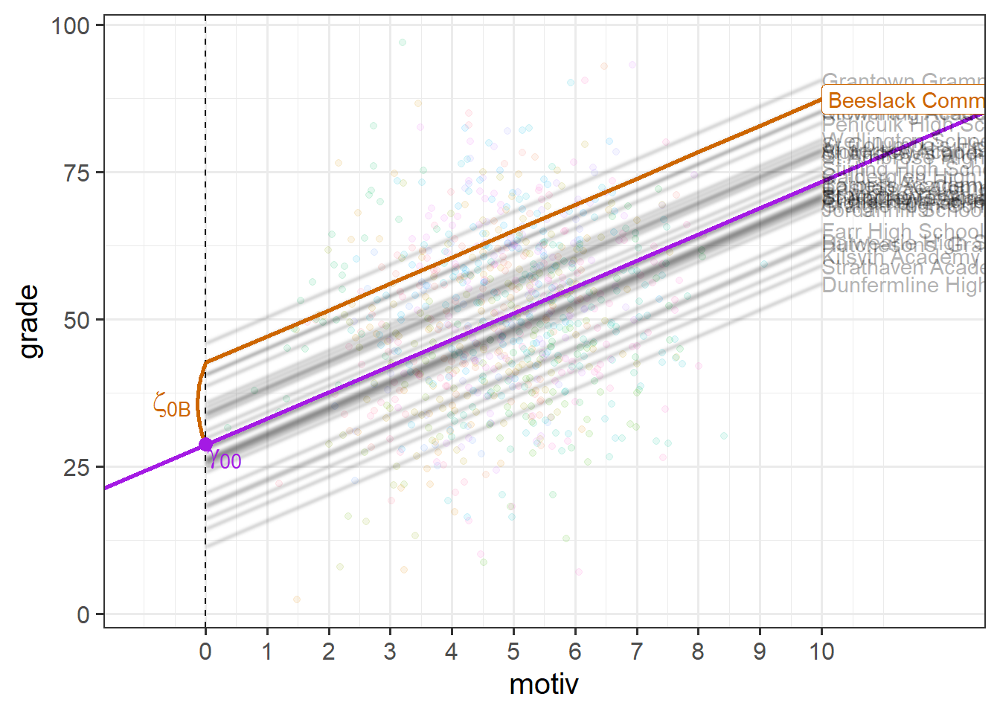
At this point, you might be wondering how this is any different from simply fitting clusters as an additional predictor in a single level regression (i.e. a clusters-as-fixed-effect approach of lm(grade ~ motiv + schoolid)), which would also estimate a difference for each cluster?
The key to the multilevel model is that we are not actually estimating the cluster-specific lines themselves (although we can get these out). We are estimating a distribution of deviations.
Specifically, the parameters of the multilevel model that are estimated are the mean and the variance of a normal distribution of clusters.
So the parameters that are estimated from our model with a random intercept by-schools, are:
- a fixed intercept \(\gamma_{00}\)
- the variance with which schools deviate from the fixed intercept \(\sigma^2_0\)
- a fixed slope for
motiv\(b_1\)
- and we also need the residual variance too \(\sigma^2_\varepsilon\)
\[ \begin{align} \text{For Child }j\text{ in School }i& \\ \text{Level 1 (child):}& \\ \text{grade}_{ij} &= b_{0i} + b_1 \cdot \text{motiv}_{ij} + \epsilon_{ij} \\ \text{Level 2 (school):}& \\ b_{0i} &= \gamma_{00} + \zeta_{0i} \\ \text{where: }& \\ &\zeta_{0i} \sim N(0,\sigma_0) \\ &\varepsilon_{ij} \sim N(0,\sigma_\varepsilon) \\ \end{align} \]
Remember, \(\sim N(m,s)\) is a way of writing “are normally distributed with a mean of \(m\) and a standard deviation of \(s\)”. So the \(\zeta_{0i} \sim N(0,\sigma_0)\) bit is saying that the school deviations from the fixed intercept are modelled as a normal distribution, with a mean of 0, and a standard deviation of \(\sigma_0\) (which gets estimated by our model).
This can be seen in Figure 4 - the model is actually estimating a fixed intercept; a fixed slope; and the spread of a normal distribution of school-level deviations from the fixed intercept.
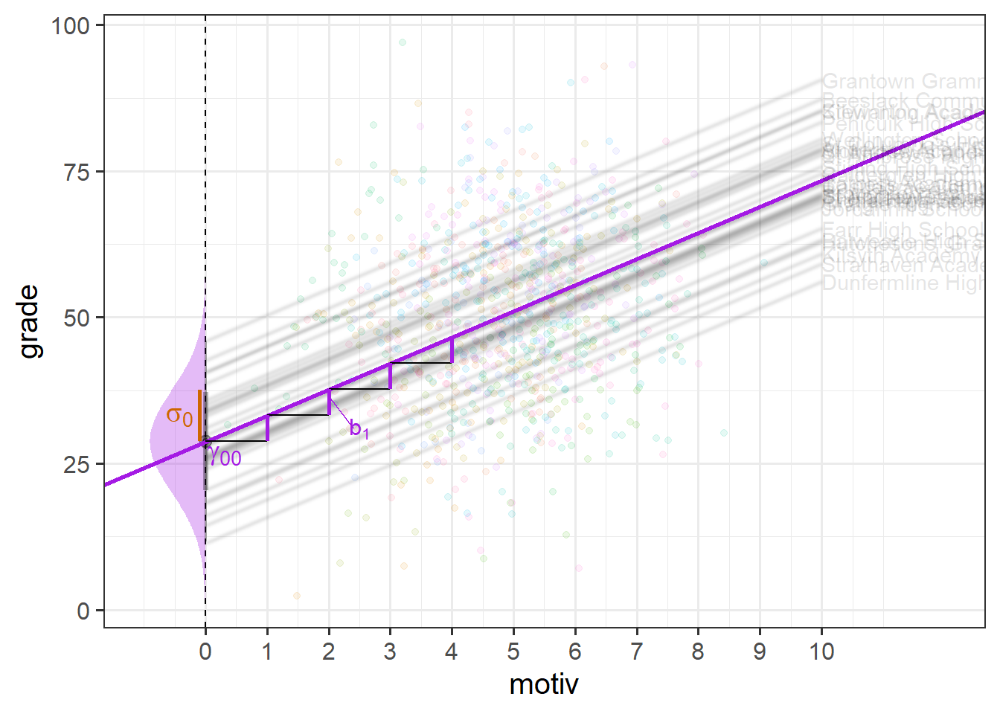
random slopes
It is not just the intercept that we can allow to vary by-schools. We can also model cluster-level deviations from other coefficients (i.e. slopes). For instance, we can allow the slope of \(x\) on \(y\) to be different for each cluster, by specifying in our model that \(b_{1i}\) is a distribution of cluster deviations \(\zeta_{1i}\) around the fixed slope \(\gamma_{10}\).
\[ \begin{align} \text{For observation }j&\text{ in cluster }i \\ \text{Level 1:}& \\ y_{ij} &= b_{0i} + b_{1i} \cdot x_{ij} + \varepsilon_{ij} \\ \text{Level 2:}& \\ b_{0i} &= \gamma_{00} + \zeta_{0i} \\ b_{1i} &= \gamma_{10} + \zeta_{1i} \\ & \qquad \\ \text{Where:}& \\ & \begin{bmatrix} \zeta_{0i} \\ \zeta_{1i} \end{bmatrix} \sim N \left( \begin{bmatrix} 0 \\ 0 \end{bmatrix}, \begin{bmatrix} \sigma_0 & \rho \sigma_0 \sigma_1 \\ \rho \sigma_0 \sigma_1 & \sigma_1 \end{bmatrix} \right) \end{align} \]
When we have random intercepts and random slopes, our assumption is that both of intercepts and slopes are normally distributed. However, we also typically allow these to be correlated, so the complicated looking bit at the bottom of the equation above is really just saying “random intercepts and slopes are normally distributed with mean of 0 and standard deviations of \(\sigma_0\) and \(\sigma_1\) respectively, and with a correlation of \(\rho \sigma_0 \sigma_1\)”. We’ll see more on this in future weeks, so don’t worry too much right now.
In Figure 5, we can see now that both the intercept and the slope of grades across motivation are varying by-school.
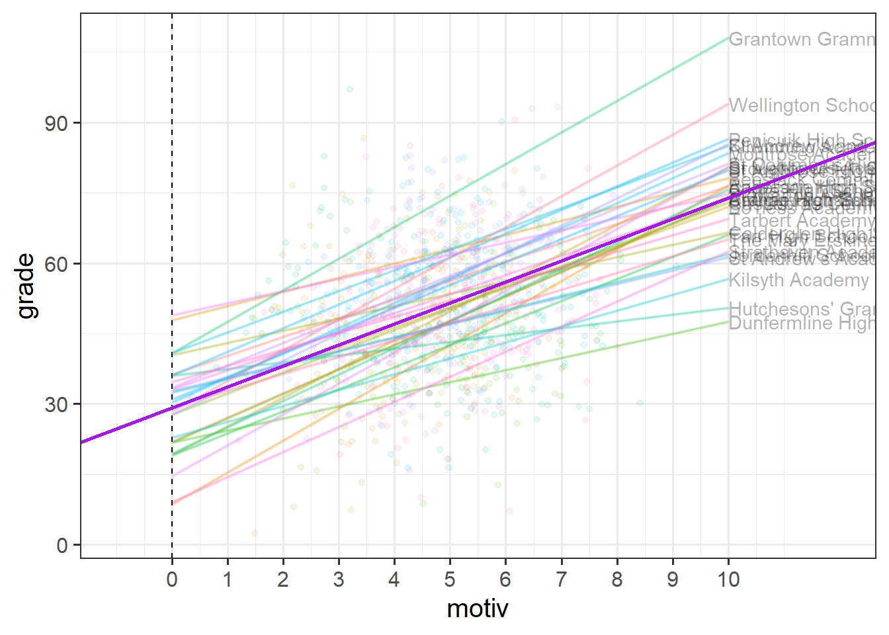
Much like for the random intercepts, we are modelling the random slopes as the distribution of school-level deviations \(\zeta_{1i}\) around a fixed estimate \(\gamma_{10}\).
So each group (school) now has, as visualised in Figure 6:
- a deviation from the fixed intercept
- a deviation from the fixed slope

While it’s possible to show the distribution of intercepts on the left hand side of our grade ~ motiv plot, it’s hard to put the distribution of slopes on the same plot, so I have placed these in the bottom panel in Figure 7. We can see, for instance, that “Hutcheson’s Grammar School” has a higher intercept, but a lower slope.
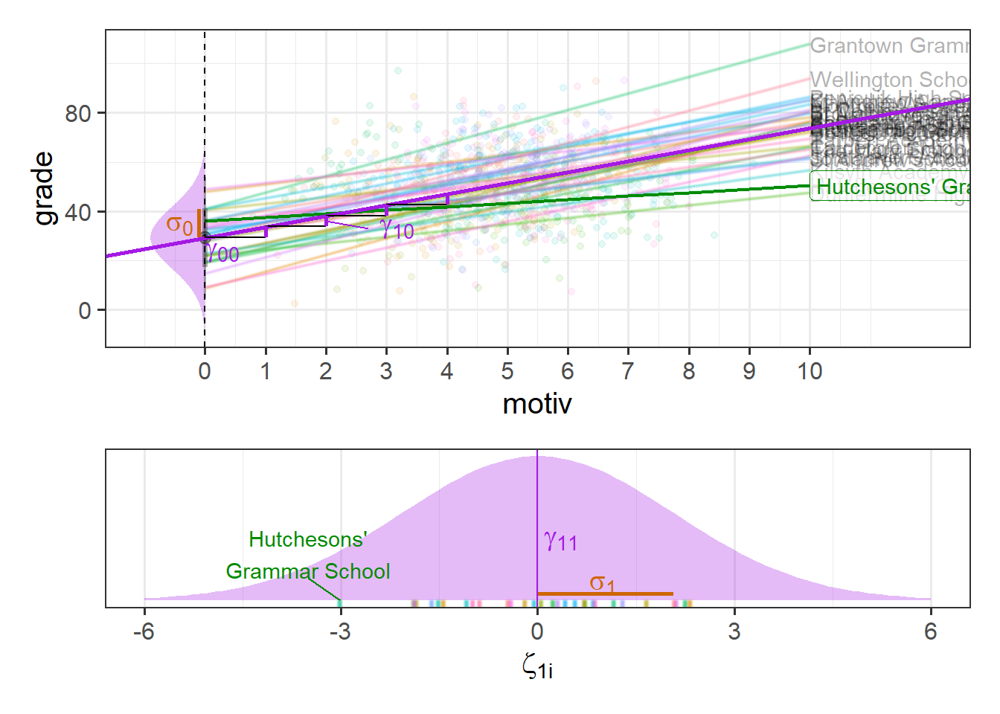
optional: joint distribution of intercept and slopes
When we have random intercepts and slopes in our model, we don’t just estimate two separate distributions of intercept deviations and slope deviations. We estimate them as related. This comes back to the part of the equation we mentioned briefly above, where we used:
- \(\sigma_0\) to represent the standard deviation of intercept deviations
- \(\sigma_1\) to represent the standard deviation of slope deviations
- \(\rho \sigma_0 \sigma_1\) to represent the correlation between intercept deviations and slope deviations
\[ \begin{bmatrix} \zeta_{0i} \\ \zeta_{1i} \end{bmatrix} \sim N \left( \begin{bmatrix} 0 \\ 0 \end{bmatrix}, \begin{bmatrix} \sigma_0 & \rho \sigma_0 \sigma_1 \\ \rho \sigma_0 \sigma_1 & \sigma_1 \end{bmatrix} \right) \] For a visual intuition about this, see Figure 8, in which the x-axis is the intercept deviations, and the y-axis is the slope deviations. We can see that these are each distributed normally, but are negatively related (schools with higher intercepts tend to have slightly lower slopes).
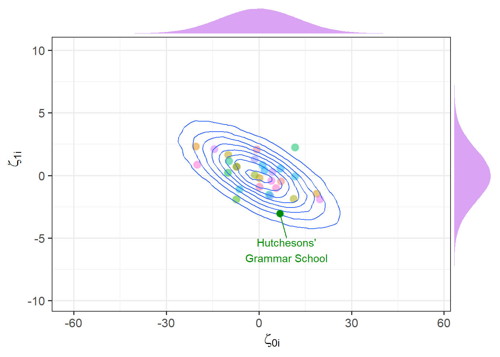
Partial pooling
As the multilevel model treats our clusters as a random distribution of deviations around some fixed center, we can think of that fixed center as the ‘average cluster’. It’s tempting to think that we could get the fixed intercept \(\gamma_{00}\) by calculating a simple linear model for each school and taking the average of all the intercepts. However, the multilevel model is much more clever than that.
The amount by which each cluster contributes to the fixed estimate depends on:
- how much between-cluster variation there is relative to within-cluster variation
- the number of observations in the cluster
This is a really useful feature, because it means that a) the model is more skeptical of clusters with few datapoints than of those with many datapoints, and b) this skepticism is weaker when clusters are in general more distinct from one another than when they are quite similar.
Another way of thinking about this is by looking at the model predicted lines for each cluster, which are also adjusted in the same way. In Figure 9, the blue lines show a simple linear model fitted to the data from each school (no pooling), and the orange lines show our predictions from the model with random intercepts and slopes for each school (partial pooling).
Note two useful features:
- For “Hypothetical School X”, which has far fewer datapoints, the multilevel model line is ‘shrunk’ back towards the average school line. This is good because we intuitively don’t want to give as much weight to that school as to the others.
- It is possible for the multilevel model to estimate a line for “Hypothetical School Y” even though it only has one datapoint. This is because these predicted lines “borrow strength” from the other schools.
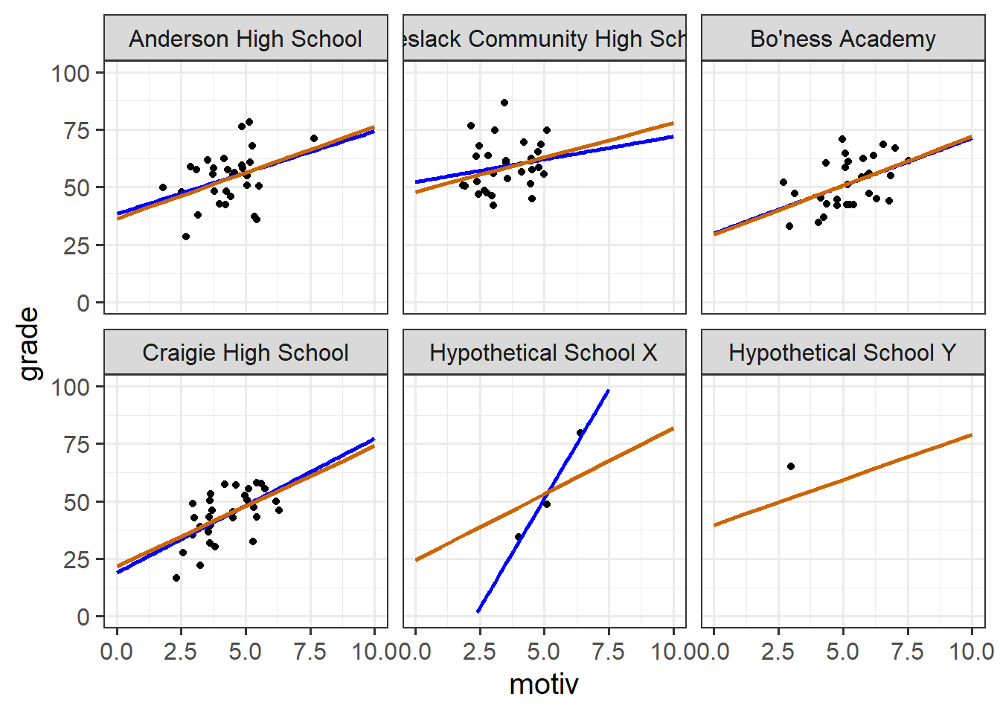
A (not very good) analogy
The no-pooling approach (i.e. something like lm(grade~motiv*schoolid), or fitting a simple lm() separately to each school) is like the libertarian ideology (valuing autonomy and personal freedom). Each school gets the freedom to define its own line without interference from others.
The partial-pooling approach (the multilevel model) is more akin to social democracy, where there is a recognition of the value of personal freedoms and diverse perspectives, but this is within the framework of a broader societal structure.
optional: how does it work?
The amount to which a cluster contributes to a fixed estimate (and the amount by which any predictions for that cluster are shrunk towards the average) is proportional to:2
\[ \begin{align} &\frac{\sigma^2_{b} }{\sigma^2_b + \frac{\sigma^2_e }{n_i}} \\ \qquad \\ \text{Where:} \\ & \sigma^2_b = \text{variance between clusters} \\ & \sigma^2_e = \text{variance within clusters} \\ & n_i = \text{number of observations within cluster }i \\ \end{align} \]
This means that there is less contribution from (and more shrinkage of estimates for) clusters when:
- smaller \(n_j\) (we have less information about a cluster)
- when within-cluster variance is large relative to between-cluster variance (clustering is not very informative)
Fitting Multilevel Models in R
While there is a big conceptual shift from the single level regression model to the multilevel model, the shift in R code is considerably less.
We’re going to use the lme4 package, and specifically the functions lmer() and glmer(). “(g)lmer” here stands for “(generalised) linear mixed effects regression”, and the two functions are designed to be logical extensions of lm() and glm().

We write the first bit of our formula just the same as our old friend the normal linear model y ~ 1 + x1 + x2 + ..., where y is the name of our outcome variable, 1 is the intercept (which we don’t have to explicitly state as it will be included anyway) and x1, x2 etc are the names of our explanatory variables (our predictors).
With lmer(), we have the addition of random effect terms, specified in parenthesis with the | operator (the vertical line | is often found to the left of the z key on QWERTY keyboards).
We use the | operator to separate the parameters (intercept, slope etc.) on the left-hand side, from the grouping variable(s) on the right-hand side, by which we would like to model these parameters as varying.
For instance, the two models we have been looking at can be fitted with:
library(lme4)
schoolmot <- read_csv("https://uoepsy.github.io/data/schoolmot.csv")
# a model with random intercepts by school
# (estimate how schools vary in their intercept)
smod1 <- lmer(grade ~ 1 + motiv + (1 | schoolid),
data = schoolmot)
# a model with random intercepts and random slopes by school
# (estimate how schools vary in their intercept, and in their slope of motiv)
smod2 <- lmer(grade ~ 1 + motiv + (1 + motiv | schoolid),
data = schoolmot)Much like the simple lm() models, we can get a nice summary output:
summary(smod2)Linear mixed model fit by REML ['lmerMod']
Formula: grade ~ 1 + motiv + (1 + motiv | schoolid)
Data: schoolmot
REML criterion at convergence: 7098.4
Scaled residuals:
Min 1Q Median 3Q Max
-3.0911 -0.6898 0.0287 0.6225 3.1781
Random effects:
Groups Name Variance Std.Dev. Corr
schoolid (Intercept) 158.117 12.574
motiv 4.288 2.071 -0.70
Residual 139.325 11.804
Number of obs: 900, groups: schoolid, 30
Fixed effects:
Estimate Std. Error t value
(Intercept) 29.2333 3.0453 9.600
motiv 4.4757 0.5543 8.074
Correlation of Fixed Effects:
(Intr)
motiv -0.825The output contains two major components - the “fixed effects” and the “random effects”. The fixed effects part contains the estimated intercept and slope(s) for the average school. The random effects part contains the estimated variance (and standard deviation3) of school deviations around those fixed estimates.
So from our ouput we can build up a picture in our heads - we know from the fixed effects that in the average school, children with zero motivation have an estimated grade of 29, and for every 1 more motivated a child is, their grades are estimated to increase by 4.48.
The random effects part tells us that we would expect schools to vary in their intercepts with a standard deviation of 12.6, and in their slopes with a standard deviation of 2.1.
If we recall our rough heuristic about normal distributions - that 95% of the distribution falls within 2 standard deviations, then we can start to build up a picture - we would expect most schools to have intercepts about 25 either side of the fixed intercept, and we would expect most schools to have slopes that are about 4 either side of the fixed slope (so most slopes will be between 0.5 and 8.5 - i.e. most will be positive).
So what we’re getting back to is something a bit like Figure 5 that we saw earlier - the model provides a description of the population of schools that we have sampled from. To illustrate this more, we could imagine simulating (from our model) 1000 new schools, and plotting their lines, and we would get something like Figure 11.
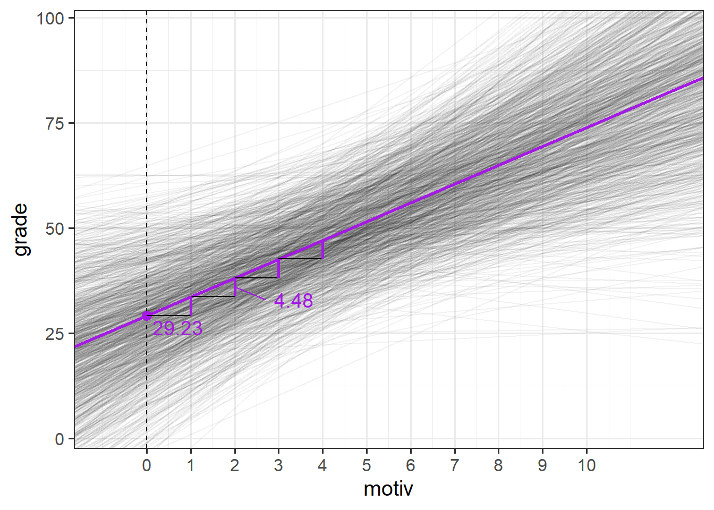
mapping summary output to parts of the equation

Extracting model parameters
Alongside summary(), there are some useful functions in R that allow us to extract the parameters estimated by the model:
fixed effects
The fixed effects represent the estimated average relationship within the entire sample of clusters.
fixef(smod2)(Intercept) motiv
29.233320 4.475717 random effect variances
The random effect variances represent the estimated spread with which clusters vary around the fixed effects
VarCorr(smod2) Groups Name Std.Dev. Corr
schoolid (Intercept) 12.5745
motiv 2.0708 -0.698
Residual 11.8036 Making model predictions
While they are not computed directly in the estimation of the model, the cluster-specific deviations from fixed effects can be extracted from our models
random effects
Often referred to as the “random effects”, the deviations for each cluster from the fixed effects can be obtained using ranef().
Note that each row is a cluster (a school, in this example), and the columns show the distance from the fixed effects. We can see that “Anderson High School” has an estimated intercept that is 7.07 higher than average, and an estimate slope of motivation that is 0.47 lower than average.
ranef(smod2)$schoolid
(Intercept) motiv
Anderson High School 7.07164826 -0.46505592
Ardnamurchan High School -7.26417838 0.70012536
Balwearie High School -20.53626558 2.31397177
Beeslack Community High School 18.63574795 -1.45057126
... ... ...We can also visualise all these using a handy function. This sort of visualisation is great for checking for peculiar clusters.
dotplot.ranef.mer(ranef(smod2))$schoolid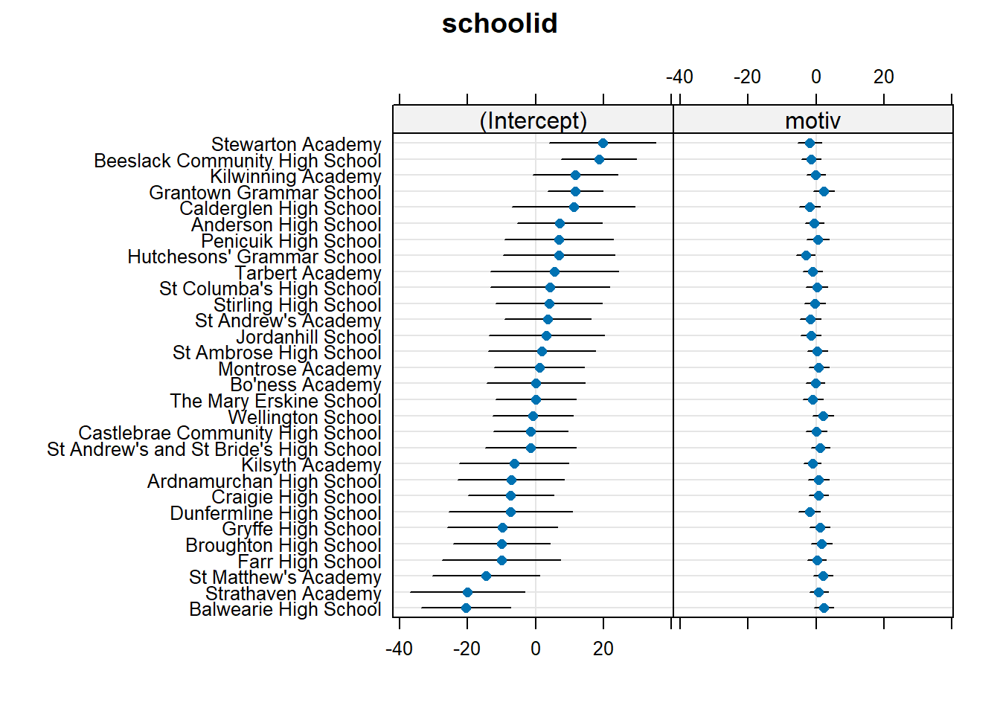
cluster coefficients
Rather than looking at deviations from fixed effects, we can calculate the intercept and slope for each cluster.
For example, if we are estimating that “Anderson High School” has an intercept that is 7.07 higher than average, and the average is 29.23, then we know that this has an intercept of 29.23 + 7.07 = 36.3.
We can get these out using coef()
coef(smod2)$schoolid
(Intercept) motiv
Anderson High School 36.304968 4.010661
Ardnamurchan High School 21.969141 5.175842
Balwearie High School 8.697054 6.789689
Beeslack Community High School 47.869068 3.025146
... ... ...A more complex model
The models fitted in the reading thus far are fairly simple in that they only really have one predictor (a measure of a child’s education motivation, motiv), and our observations (children) happen to be clustered into groups (schools).
However, the multilevel model can also allow us to study questions that we might have about features of those groups (i.e., things about the schools) and how those relate to observation-level variables (things about the children).
For instance, we might have questions that take the form:
- “does [Level-2 variable] predict [Level-1 outcome]?”
- “does [Level-2 variable] influence the relationship between [Level-1 predictor] and [Level-1 outcome]?
(in our example, Level-1 = children, Level-2 = Schools).
Consider, for example, if we want to investigate whether the relationship between children’s motivation levels and their grades is different depending upon the source of school funding (private vs state).
Addressing such questions requires a different fixed effect structure in order to allow us to test the relevant estimate of interest. Specifically here we need the interaction between motiv and funding (private vs state).
Note that this interaction is ‘cross-level’! It allows us to ask whether something about children (the grade~motiv relationship) depends upon something about the school they’re in (funding type).
smod3 <- lmer(grade ~ motiv * funding + (1 + motiv | schoolid),
data = schoolmot)Note, we cannot include funding in the random effects part of our model, because “the effect of funding on school grades” is something we assess by comparing between schools. We cannot think of that effect varying by-school because every school is either “private” or “state” funded. We never observe “Ardnamurchan High School” as anything other than “state” funded, so “the effect on grades of being state/private funded” does not exist for Ardnamurchan High School (and hence it is illogical to try and say that this effect varies between schools).
Our additions to the fixed effects part here simply add in a couple of fixed terms to our model (the funding coefficient and the motiv:funding interaction coefficient). This means that in terms of our model structure, it is simply moving from the single line we had in Figure 7, to having two lines (one for “private” schools and one for “state” schools). The random effects are, as before, the variance in deviations of individual schools around these fixed estimates.
Model equation
This model is not too much of an extension on our previous equation, but when we move to models with more than 2 levels (e.g., children in schools in districts), these equations can become very cumbersome.
Additionally, as you become more practiced at fitting multilevel models, you may well begin to think of these models in terms of the lmer() syntax in R, rather than in terms of the mathematical expressions.
This is absolutely fine, and you should feel free to ignore these equations if they are of no help to your understanding!
Because the funding variable is something we measure at Level 2 (schools), in most notations it gets placed in the level 2 equations:
\[ \begin{align} \text{For Child }j\text{ in School }i& \\ \text{Level 1 (child):}& \\ \text{grade}_{ij} &= b_{0i} + b_{1i} \cdot \text{motiv}_{ij} + \epsilon_{ij} \\ \text{Level 2 (school):}& \\ b_{0i} &= \gamma_{00} + \zeta_{0i} + \gamma_{01} \cdot \text{Funding}_i\\ b_{1i} &= \gamma_{10} + \zeta_{1i} + \gamma_{11} \cdot \text{Funding}_i\\ \end{align} \]
It is sometimes easier to think of this in the “mixed effects notation” we saw above, where we substitute the level 2 equations into the level 1 equation, and rearrange to get:
\[
\begin{align}
&\text{For Child }j\text{ in School }i \\
&\text{grade}_{ij} = (\gamma_{00} + \zeta_{0i}) + \gamma_{01} \cdot \text{Funding}_i + (\gamma_{10} + \zeta_{1i})\cdot \text{motiv}_{ij} + \gamma_{11} \cdot \text{Funding}_i \cdot \text{motiv}_{ij} + \epsilon_{ij} \\
\end{align}
\]
optional: an attempted visual explanation
Figure 12 shows an attempted visual intuition of how the different parts of the model work:
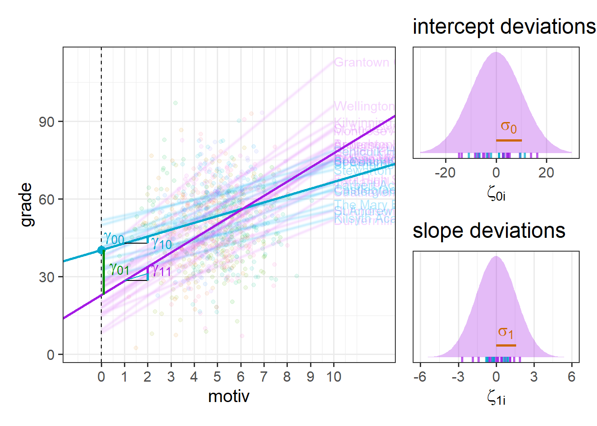
model summary
summary(smod3)Linear mixed model fit by REML ['lmerMod']
Formula: grade ~ motiv * funding + (1 + motiv | schoolid)
Data: schoolmot
REML criterion at convergence: 7083.6
Scaled residuals:
Min 1Q Median 3Q Max
-3.08250 -0.67269 0.03043 0.63562 3.13012
Random effects:
Groups Name Variance Std.Dev. Corr
schoolid (Intercept) 105.126 10.253
motiv 2.595 1.611 -0.48
Residual 139.030 11.791
Number of obs: 900, groups: schoolid, 30
Fixed effects:
Estimate Std. Error t value
(Intercept) 40.3143 4.6414 8.686
motiv 2.6294 0.8652 3.039
fundingstate -17.2531 5.7347 -3.009
motiv:fundingstate 2.8485 1.0591 2.689
Correlation of Fixed Effects:
(Intr) motiv fndngs
motiv -0.782
fundingstat -0.809 0.633
mtv:fndngst 0.639 -0.817 -0.773plot
For plotting the fixed effect estimates (which are often the bit we’re most interested in) from multilevel models, we can’t rely on using predict(), fitted() or augment(), as these return to us the cluster-specific predicted values.
Instead, we need to use tools like the effects package that we saw at the end of the USMR course, that takes a fixed effect and averages over the other terms in the model:
library(effects)
effect(term="motiv*funding",mod=smod3,xlevels=20) |>
as.data.frame() |>
ggplot(aes(x=motiv,y=fit,col=funding,fill=funding))+
geom_line()+
geom_ribbon(aes(ymin=lower,ymax=upper),alpha=.3)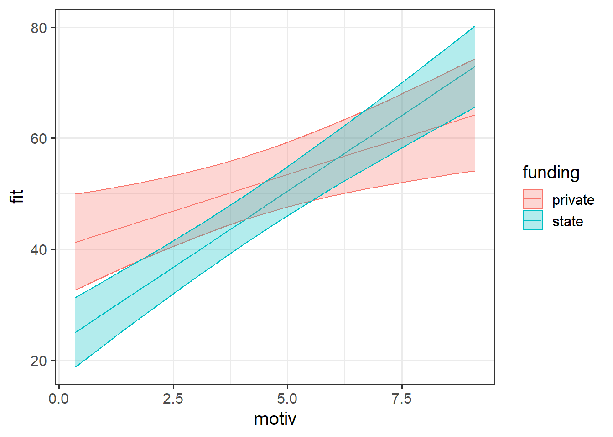
Model Estimation
With single level regression models fitted with lm(), our estimated coefficients could actually be obtained using some matrix algebra. Fitting multilevel models is a bit more complicated, and so we have to instead rely on an iterative procedure known as “maximum likelihood estimation” (“ML” or “MLE”).
We actually saw this previously when fitting logistic regressions. The process is iterative in that it involves testing the fit of a set of candidate parameters (i.e. giving some initial values for our coefficients) and working out what direction we need to change them in order to get a better fit. We then change them accordingly, evalute the fit, change them, evaluate fit, … and so on until we reach a point where we don’t think we can get any better.
In maximum likelihood estimation, the “fit” of the model is assessed through the likelihood (the probability of seeing our data, given some hypothesis, see here for an explanation).
If we were estimating just one single parameter (e.g. a mean), then we can imagine the process of maximum likelihood estimation in a one-dimensional world - simply finding the top of the curve (Figure 13, LH panel).
However, our typical models estimate a whole bunch of parameters, and with lots of parameters being estimated and all interacting to influence the likelihood, our nice curved line becomes a complex surface (Figure 13 RH panel shows it in 3D). What MLE does is try to find the maximum (the top the mountain), but avoid local maxima (false summits) and impossible values (e.g., variances \(\leq 0\)), without getting stuck (in plateaus).

We can choose whether to estimate our model parameters with ML (maximum likelihood) or REML (restricted maximum likelihood) with the REML argument of lmer():
lmer(formula,
data = dataframe,
REML = logical,
control = lmerControl(options)
)
data = dataframe,
REML = logical,
control = lmerControl(options)
)
TL;DR
lmer() models are by default fitted with REML, which tends to be better for small samples.
optional: why REML?
REML overcomes a problem for multilevel models fitted with standard MLE, which is that at each iteration of the maximum likelihood, the random effect variances are estimated after the fixed effects (because they are the variances of clusters around the fixed effects). This means that we are essentially treating the fixed effects as a known constant when estimating the random effect variance. The downside of this is that it biases our variance estimates to be smaller than they should be4, especially if \(n_\textrm{clusters} - n_\textrm{level 2 predictors} - 1 < 50\). This leads to the standard errors of the fixed effects being too small, thereby inflating our type 1 error rate (i.e. greater chance of incorrectly rejecting our null hypothesis).
REML avoids this by first partialling out the fixed effects (i.e. removing all of the association, so that the fixed effects are 0 by definition), then using maximum likelihood to iteratively estimate the random effect variances. At the end, it then uses generalised least squares to estimate the fixed effects given the known random effect structure. Because this separates the estimation of fixed and random parts of the model, it results in unbiased estimates of the variance components.
convergence warnings & singular fits
There are different algorithms that we can use to actually undertake the iterative estimation procedure, which we can apply by using different ‘optimisers’.
lmer(formula,
data = dataframe,
REML = logical,
control = lmerControl(options)
)
data = dataframe,
REML = logical,
control = lmerControl(options)
)
Technical problems to do with model convergence and ‘singular fit’ come into play when the optimiser we are using either can’t find a suitable maximum, or gets stuck in a plateau, or gets stuck trying to move towards a number that we know isn’t possible.
For large datasets and/or complex models (lots of random-effects terms), it is quite common to get a convergence warning when trying to fit a model, and in the coming weeks you will see plenty of warnings such as:
- A typical convergence warning:
warning(s): Model failed to converge with max|grad| = 0.0071877 (tol = 0.002, component 1)
- A singular fit:
boundary (singular) fit: see ?isSingular
Do not trust the results of a model that does not converge
There are lots of different ways to deal with these (to try to rule out hypotheses about what is causing them), but for the time being, if lmer() gives you convergence errors or singular fits, you could try changing the optimizer. Bobyqa is a good one: add control = lmerControl(optimizer = "bobyqa") when you run your model.
lmer(y ~ 1 + x1 + ... + (1 + .... | g), data = df,
control = lmerControl(optimizer = "bobyqa"))Footnotes
Some books use “cluster \(j\) >> observation \(i\)”, others use “cluster \(i\) >> observation \(j\)”. We use the latter here↩︎
this exact formula applies to the model with random intercepts, but the logic scales up when random slopes are added↩︎
remember, variance = standard deviation squared↩︎
it’s a bit like n-1 being in the denominator of the formula for standard deviation↩︎